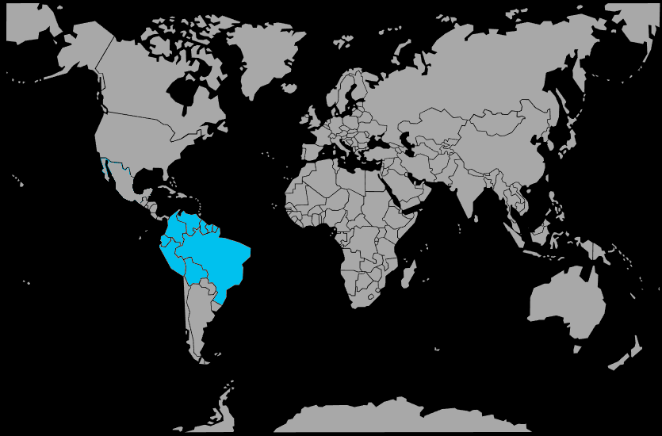

Systématique
- Ordre : Gymnotiformes
- Famille : Gymnotidae
- Genre : Electrophorus
- Espèce : Electrophorus electricus
Electrophorus electricus est un poisson électrique géant d'Amérique du Sud, capable de générer des décharges électriques atteignant 600 à 860 volts, ce qui en fait le plus puissant bioélectrogénérateur vivant.
Il atteint couramment 2 mètres de longueur et peut dépasser 20 kg, avec un corps serpentiforme brun‑verdâtre dépourvu d'écailles, de nageoire dorsale, caudale et pelvienne.
L'espèce est solitaire et principalement nocturne, passant la journée cachée dans des zones ombragées et devenant active au crépuscule pour chasser poissons, amphibiens et invertébrés.
Elle est obligée de respirer de l'air atmosphérique toutes les 10 à 15 minutes en raison de la pauvreté en oxygène de son milieu; une maintenance en aquarium nécessite un volume exceptionnel et des précautions extrêmes en raison de ses décharges électriques potentiellement mortelles.
Mode : ovipare avec soins paternels; en saison sèche, le mâle construit un nid de mucus dans la boue le long des berges, où la femelle dépose 10 000 à 17 000 œufs.
Le mâle garde ensuite les œufs et les larves jusqu'aux premières pluies de janvier, moment où les jeunes d'environ 10 cm sont dispersés par les courants; les premières larves éclosent pratiquent le cannibalisme, réduisant la couvée à environ 1 000 survivants.
Dimorphisme sexuel : inconnu ou non documenté en aquariophilie, la taille étant le seul critère fiable.
Espérance de vie : au moins 10 ans en captivité pour des spécimens subadultes ou adultes maintenus dans des conditions exceptionnelles, probablement davantage dans la nature.
Electrophorus electricus occupe les zones peu profondes, calmes et souvent hypoxiques des plaines inondables, marécages, bras morts et criques forestières, où il évolue sur fonds boueux riches en matière organique.
Répartition
Origine naturelle :
- Bouclier guyanais : Guyane, Suriname, Guyane française, Venezuela (bassin de l'Orénoque) et nord du Brésil (états de l'Amapá, Roraima).
- Bassins de l'Essequibo, du Corantijn et du Maroni.
- Cours moyen et inférieur de l'Orénoque et affluents guyanais du bas Amazone.
L'espèce est endémique du bouclier guyanais dans les systèmes fluviaux à faible conductivité, où elle est séparée des autres espèces du genre Electrophorus récemment décrites dans le bassin amazonien central et le bouclier brésilien.
Paramètres de maintenance
Température : 23 à 28 °C.
pH : 5,5 à 7,0, eau douce à légèrement acide.
GH : 1 à 12 °dGH, eau douce.
Courant : très faible, avec une surface calme et un accès obligatoire à l'air atmosphérique.
Volume conseillé : au minimum 600 à 800 L pour des spécimen juvénile, avec une augmentation rapide vers 2 000 L
Régime alimentaire
Régime : carnivore vorace; dans la nature, il se nourrit de poissons, d'amphibiens, de petits mammifères et d'invertébrés aquatiques qu'il immobilise par des décharges électriques.
En aquarium, il accepte poissons entiers morts, filets de poisson, gros vers de terre et autres nourritures carnées distribuées avec de longues pinces pour éviter tout contact.
La manipulation de cette espèce nécessite des protocoles de sécurité stricts; ses décharges électriques répétées peuvent tuer un humain adulte, et l'aquarium doit être équipé d'un couvercle lourd et parfaitement hermétique.